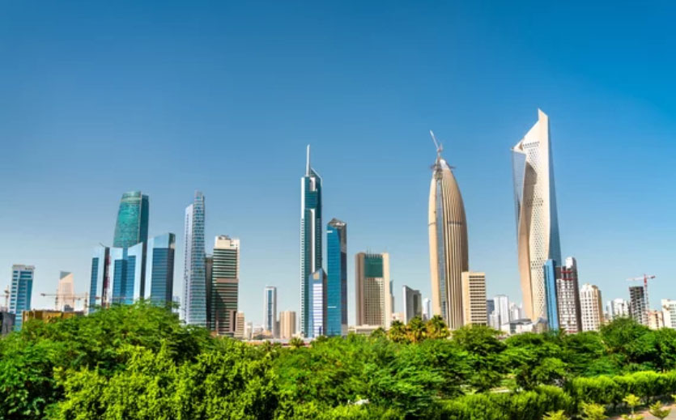
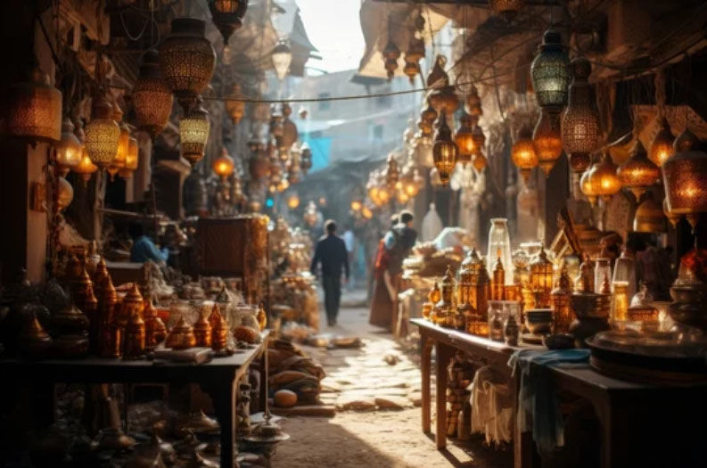
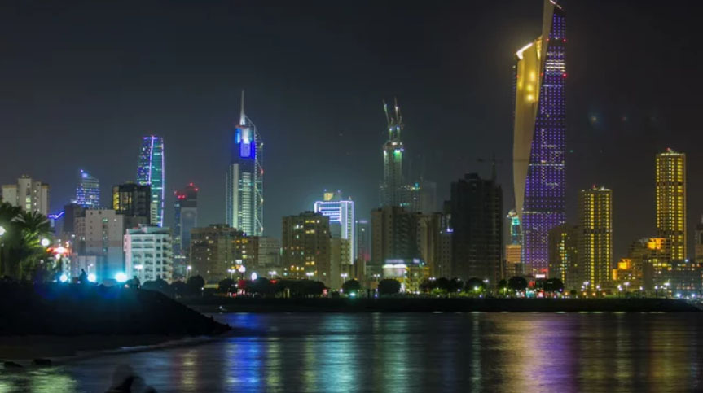

Kuwait: A Journey Through Time
Experience the energy of Kuwait through its dynamic hubs, where soaring modern skylines meet the timeless pulse of traditional souqs.
Iconic Landmarks
View all chevron_rightKuwait Towers
The iconic symbol of Kuwait. Modern design meets a breathtaking 360° view of the city and the Gulf.
Grand Mosque
A masterpiece of Islamic architecture. Kuwait’s largest mosque, filled with stunning details and serenity.
Liberation Tower
A global-scale communication tower built to celebrate liberation from the Iraqi occupation.
Failaka Island
A journey through time. From ancient Greek ruins to modern history, all on one unique island.
The Heart of Kuwait

Kuwait City
The heartbeat of the nation’s skyline.

Al Mubarakiya
The historic soul of old Kuwait.

Salmiya
The vibrant pulse of modern life.
The Kuwaiti Table
From the fragrant Machboos to the sweet crunch of Lugaimat, discover the true essence of hospitality on The Kuwaiti Table.
Machboos
The National Dish
Mutabbaq Zubaidi
Bounty of the Sea
Margoog
A rich, spice-infused stew that tastes like a warm Kuwaiti home.
Lugaimat
Heavenly Sweets
クウェート国の歴史
State of Kuwait
Kuwait's unique geography allowed it to flourish as an Ancient Crossroads, connecting major civilizations through maritime trade and pearling. Today, the nation honors this enduring legacy of openness and exchange, bridging its historic roots with a dynamic modern identity.
古代
シュメール文明 （紀元前3000年頃 - 紀元前2000年頃）
メソポタミア文明の一部として、交易や文化が発展。
アッカド帝国 （紀元前2334年 - 紀元前2154年）
メソポタミア全域を統一した帝国。
バビロニア王国 （紀元前1894年 - 紀元前539年）
ペルシャ湾沿岸地域も影響を受ける。
アケメネス朝ペルシア （紀元前539年 - 紀元前330年）
ペルシャ帝国の一部として統治。
中世
イスラム帝国（ウマイヤ朝・アッバース朝） （7世紀 - 13世紀）
イスラム教の拡大に伴い、クウェート地域もイスラム文化の影響を受ける。
モンゴル帝国の影響 （13世紀）
中央アジアからの影響が広がる。
近世
オスマン帝国 （16世紀 - 18世紀）
クウェート地域はオスマン帝国の宗主権下に置かれる。
近現代・現代
サバーハ家の統治（1756年 - 現在）
サバーハ家が首長としてクウェートを統治し始める。
イギリスの保護領 （1899年 - 1961年）
イギリスとの保護条約により、外交と軍事面でイギリスの影響を受ける。1938年に大油田の発見。
クウェートの独立 （1961年）
イギリスから独立を達成し、立憲君主制国家として発展。
湾岸戦争 （1990年 - 1991年）
イラクによる侵攻を受け、多国籍軍の介入により主権を回復。
クウェート国 （1991年 - 現在）
石油資源を活用し、経済発展を遂げる。中東地域の安定に向けた努力を続ける。 クウェートは、古代から現代に至るまで、交易や文化の交差点として重要な役割を果たしてきました。
16世紀にヨーロッパ列強が湾岸地域へ進出するようになりクウェートの存在が知られるようになった。
18世紀、アラビア半島中央部から移住した部族がクウェートの基礎をつくった。
サバーハ家の始まり
1756年に、クウェートでサバーハ家が統治を開始しました。この年、地元の部族による合意で、サバーハ家が首長として選ばれたのです。
この家系は、湾岸地域の交易と政治を統率し、安定した統治を維持しました。統治スタイルは、立憲君主制の枠組みの中で、国民との協調を重視しています。